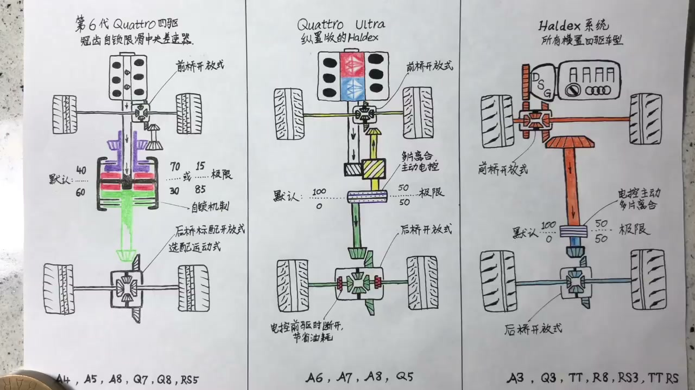
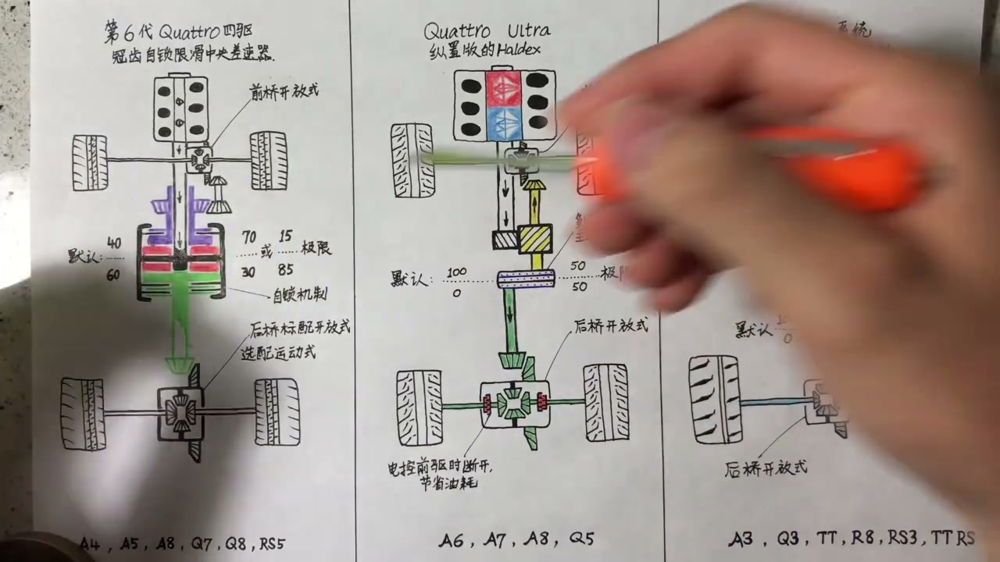
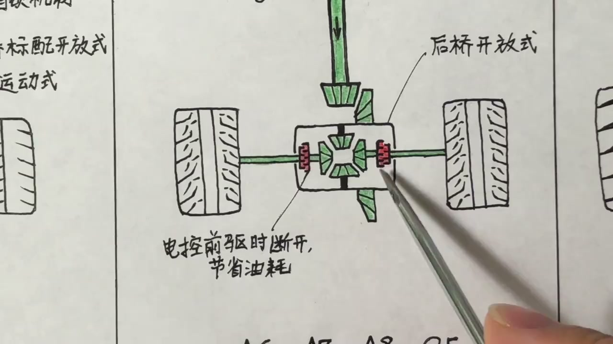
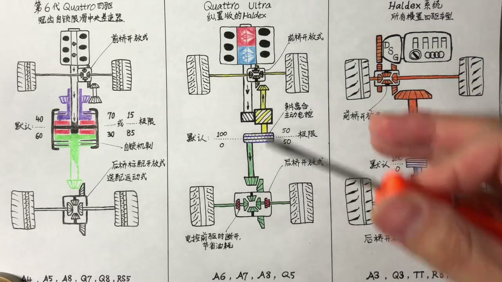
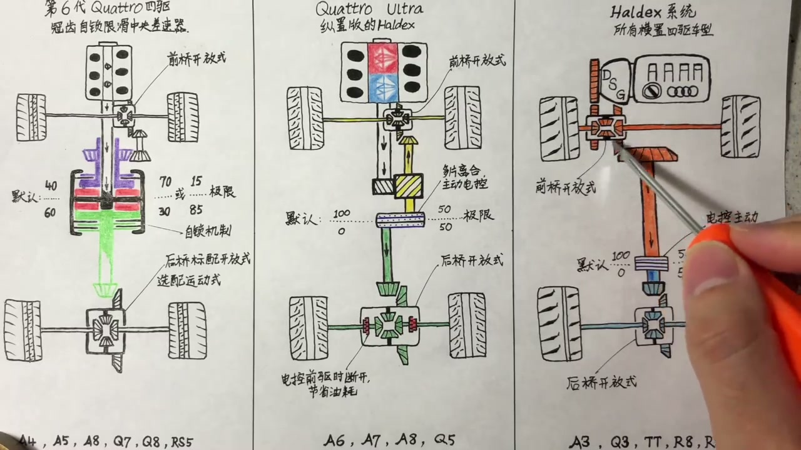
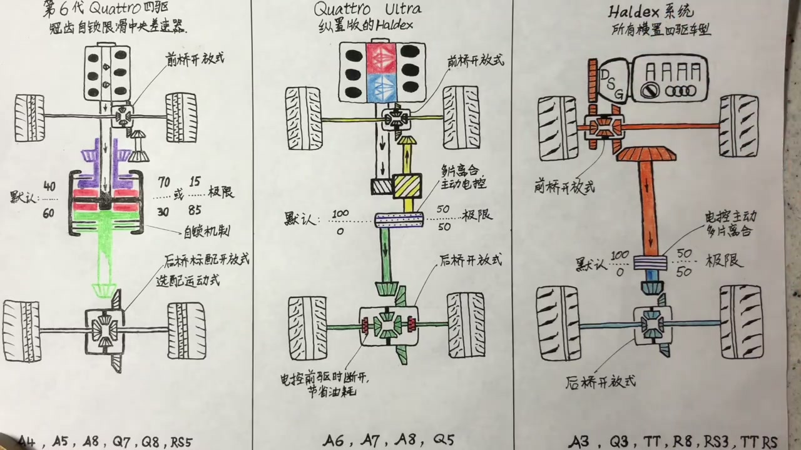
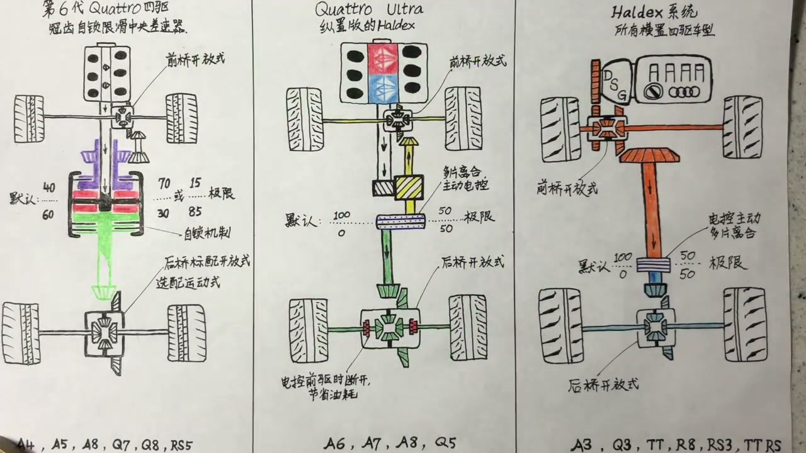
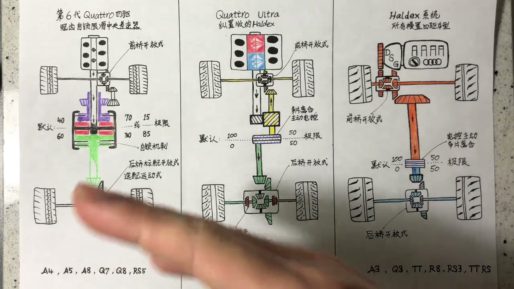

01
中文
quattro ultra用在所有奥迪纵置车型上，是一个适时四驱系统。
EN
Quattro ultra equips Audi's longitudinal cars—an on-demand AWD system.
表达提示on-demand（适时）

Scene English · 汽车 · 四驱系统
Audi Quattro (2): Quattro Ultra and Haldex
🎧 语音讲解
Quattro Ultra at a Glance
情境quattro ultra用在奥迪纵置车型上（A6/A7/A8/Q5），是一套适时四驱系统，前桥仍是开放式差速器，通过电控多片离合向后方传递动力。
quattro ultra用在所有奥迪纵置车型上，是一个适时四驱系统。
Quattro ultra equips Audi's longitudinal cars—an on-demand AWD system.
表达提示on-demand（适时）
前桥很遗憾仍然是开放式差速器，往后传动力靠一个电控多片离合器。
The front diff is still open, and power flows rearward through an electronically controlled multi-plate clutch.
表达提示multi-plate clutch（多片离合）
on-demand（适时
multi-plate clutch（多片离合

Default: Pure Front-Wheel Drive
情境没有打滑的默认情况下前后动力分配是100:0，也就是一台纯前驱车，后轴传动完全断开。
默认情况下前后动力分配是100比0，这是一台纯纯的前驱车。
By default the split is 100/0—a pure front-wheel-drive car.
表达提示front-wheel drive（前驱）
这个地方断开了，后面就不用看了，整个传动就是前驱车。
The rear path is disconnected; it's simply a FWD drivetrain.
表达提示drivetrain（传动系统）
front-wheel drive（前驱
drivetrain（传动系统

The Computer Actively Locks
情境前轮打滑或驾驶员想运动驾驶时，电脑主动把离合片锁死。比如红灯口轰着油门，电脑判断你可能要弹射起步，即使车还没动、前轮没打滑，也会提前锁死离合给后桥传动力。离合片锁死极限只能做到50:50。
当前轮打滑或者你想运动驾驶时，电脑会通过电子控制主动把离合片锁死。
When the front slips or you drive hard, the computer actively locks the clutch.
表达提示actively lock（主动锁死）
就算车还没动，电脑能判断你想要最大抓地力，提前把离合片锁死。
Even before moving, it senses you want max grip and locks up early.
表达提示max grip（最大抓地力）
离合片彻底锁死也就是极限，最多做到50比50的动力分配。
Fully locked, the clutch tops out at a 50/50 split.
表达提示50/50 split（前后50比50）
actively lock（主动锁死
max grip（最大抓地力

The Decoupler Saves Fuel
情境系统里还有第二个关键部件：两个红色部分可以通过电子控制连接或断开。进入前驱模式时不仅离合片断开，这两个部分也断开，后轮变成完全自由的轮子，传动轴完全静止，最大限度减少油耗。
第二个关键部件是两组可以电子控制连接或断开的轴。
The second key part: two shafts that can connect or disconnect electronically.
表达提示disconnect（断开）
进入前驱模式时不仅离合片断开，这两个部分也断开，后轮完全自由。
In FWD mode the clutch and these shafts both open, leaving the rear wheels free.
表达提示free wheels（自由轮）
这样传动轴连转都不转，没有人为它浪费动力，最大限度减少油耗。
The driveshaft sits still, wasting nothing—max fuel savings.
表达提示fuel savings（省油）
disconnect（断开
free wheels（自由轮

Pros and Cons of Ultra
情境优点：省油，非常适合市区驾驶；动力分配由电脑主动控制，不是打滑后才介入。缺点：仍然是前驱属性，发动机重量全压在前轴前面；动力分配不够硬派；前后桥都是开放差速器，只靠电子刹车限滑。
优点就是省油，非常适合城区市区驾驶。
The plus is fuel economy—great for city driving.
表达提示city driving（市区驾驶）
动力分配是电脑主动控制的，而不是出现打滑的时候才介入。
Torque is distributed proactively, not only after slip occurs.
表达提示proactively（主动地）
缺点是偏前驱属性，动力分配不够硬派，前后桥都是开放差速器。
The drawbacks: a front-biased feel, soft limits, and open diffs.
表达提示front-biased（偏前驱）
city driving（市区驾驶
proactively（主动地

The Haldex System
情境Haldex用在所有奥迪横置四驱车型上（A3/Q3/TT/R8/RS3/TT RS），还有大众很多横置四驱车。它不是奥迪自己的技术，而是博格华纳的技术，已经出到第五代。
Haldex用在所有奥迪横置四驱车型上，比如A3、Q3、TT、RS3。
Haldex equips Audi's transverse AWD cars—the A3, Q3, TT, RS3.
表达提示transverse AWD（横置四驱）
这不是奥迪自己的技术，是博格华纳的技术，已经出到第五代。
It's BorgWarner's tech, not Audi's, now in its fifth generation.
表达提示BorgWarner（博格华纳）
transverse AWD（横置四驱
BorgWarner（博格华纳

How Haldex Works
情境发动机动力先到开放式前桥差速器，前桥差速器同时带一组齿轮把动力转90度向后传。多片主动离合设计在变速箱尾部，默认也是100:0前驱；前轮打滑或运动驾驶时电脑压上离合片，动力传到后桥，锁死极限也是50:50。
前桥差速器上有一组齿轮把动力转90度向后传，一路上所有橘色部分只要挂挡就都在转。
A gear set turns the drive 90° rearward; everything orange spins whenever you're in gear.
表达提示gear set（齿轮组）
这个多片离合设计在变速箱尾部，默认动力分配也是100比0。
The clutch pack sits at the gearbox tail, defaulting to a 100/0 split.
表达提示clutch pack（离合片组）
前轮打滑或运动驾驶时电脑压上离合片，动力传到后桥，锁死极限是50比50。
On slip or hard driving the computer engages it, sending power rear—up to 50/50.
表达提示engage（接合）
gear set（齿轮组
clutch pack（离合片组

Pros and Cons of Haldex
情境优点：省油、主动电脑控制、比纯液压强。缺点：是纯纯的前驱属性（前置横置发动机），前后桥都是开放差速器，没有运动差速器可选。
优点和省油、主动控制这些基本一样，总比完全液压的来得强。
It's economical and proactive—still better than pure hydraulic systems.
表达提示hydraulic（液压的）
缺点就是纯纯的前驱属性，完全前置的横置发动机。
The drawback: an emphatically front-drive character.
表达提示character（属性）
前后桥老生常谈，还是两套开放式差速器。
Both axles remain open diffs, as usual.
表达提示as usual（老生常谈）
hydraulic（液压的
character（属性
No Best, Only the Fitting One
情境三种四驱系统都讲完。很多朋友爱问哪种最好，深入研究会发现没有最好只有最合适，要根据个人实际需求选择。情怀归情怀，科技永远在向前进步。
深入进去研究以后你会发现，其实没有最好，只有最合适的。
Dig deeper and you'll find there's no best system—only the most fitting.
表达提示the most fitting（最合适的）
还是要根据你个人的实际需求，来选择最适合你的。
Choose based on your actual needs.
表达提示based on（根据）
情怀还是要有的，但科技永远是在向前进步的。
Keep the nostalgia, but technology always moves forward.
表达提示nostalgia（情怀）
the most fitting（最合适的
based on（根据
说ultra默认前驱
说电脑锁离合
说断开机构
说Haldex
说极限50比50
说怎么选
ultra默认是前驱。
纵置用ultra横置用Haldex。
Haldex没有运动后差速器。
断开传动轴省油。
没有最好只有最合适。